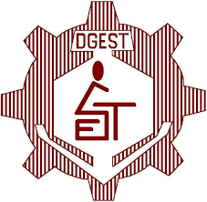
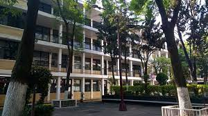
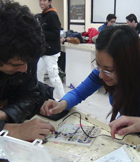
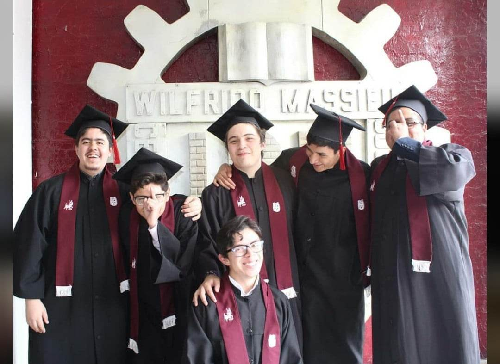

Sobre mí
Hola, mi nombre es Emmanuel Sinai Farrera Mendez actualmente tengo 22 años. Nací en la Ciudad de México (también conocido como Distrito federal) el 20 de febrero del 2001. Actualmente sigo residiendo en la Ciudad de México en la alcaldía Álvaro Obregón.
Mi madre se llama Carmen Mendez, ella es estilista desde que tengo memoria y también se encargaba de las cuestiones del hogar y principalmente de criarme. De todos los recuerdos que tengo de cuando era pequeños, ya fueran felices o no ella siempre está en ellos velando por mi bienestar.
Y mi padre se llamaba Bladymir Farrera, él era bombero de la Ciudad de México. Y en contraparte con mi madre, la relación que tenía con él nunca fue muy estrecha ya que debido a su trabajo y muchas veces a su desinterés no convivimos mucho. Desafortunadamente el falleció en servicio el 11 de febrero del 2019 y esto represento uno de los golpes más duros que he tenido en mi vida.
Tengo dos hermanos menores, que se llaman Roberto Farrera y Elizabeth Farrera. Mi relación con ello es muy buena y siempre trato de ayudarlo con lo que puedo para que puedan cumplir sus sueños.
Desde pequeño siempre fui un niño muy tranquilo, pero sumamente curioso. Quería saber cómo funcionaba todo, desde porque el cielo era azul hasta porque cosas como la televisión o mis juguetes funcionaban.
Este soy yo:

Mi carrera academica
Jardín de niños y primaria
Yo asistí al jardín de niños "Alfredo B. Nobel" que para fortuna de mis padres se encontraba demasiado cerca de mi casa. Y a diferencia de otros niños a mí me encantaba ir a ese lugar ya que desde pequeño he sido bastante valiente e independiente.
De esta época no recuerdo mucho más que la gran área verde en la que encanceraba jugar y en la que me dedicaba a recolectar insectos. En el solo estuve dos años ya que entre a los 4 años y no a los 3 como se espera.
Asistí a la primaria "Manuel Doblado" fue un poco más compleja ya que a diferencia del jardín de niños empecé a desarrollar una ansiedad social que tengo aun, lo que me impedía tener amigos. Por lo que mi primer y segundo años fueron bastante difíciles. Mi primer amigo lo tuve hasta tercer año de primaria, y como siempre seguí con el mismo grupo me fue más fácil integrarme a este, por lo que los siguientes años fueron mucho más llevaderos.
Secundaria
Yo curse esta etapa en la escuela secundaria técnica no. 57 "Guillermo Prieto" . En esta etapa mi ansiedad social se incrementó un poco más, pero gracias a la profesora de Español que no encargo hacer un trabajo en equipo conocí Fabian, él nos invitó a su casa a mí y a los otros integrantes del equipo y describí que tenemos mucho en común. Por lo que nos hicimos muy buenos amigos. En la secundaria descubrí mis dos pasiones, la primera ya que al ser una secundaria técnica tenías que escoger un taller desde tu primer año, y el que yo escogí fue el de electricidad y electrónica. Dichas clases me encantaban y era muy bueno en eso y mi otra pasión se dio en el tercer año en el cual nos dan química. Una materia con la que no sentía ningún interés pero que rápidamente y mucho en parte gracias al carisma del profesor se volvió mi materia favorita. Tanto, que enserio quería estudiar química y dedicarme a eso cuando creciera incluso más que a la electrónica. Pero debido a que el examen COMIPEMS no me lo tome con la seguridad necesaria y por consecuencia no me quede en mi primera opción que era el CECYT NO. 6 y me termine quedando en mi segunda opción el CECYT NO. 11.

Bachillerato
Ya en el CECYT NO. 11 me toco por primera vez ir en la tarde a la escuela. Cosa que al principio no me gustó mucho porque no estaba acostumbrado, pero que con el paso del tiempo fue una de las cosas más maravillosas que me pasaron en la Vocacional. Ya en este nivel la ansiedad social que tenía era un problema porque enserio no le hablaba a nadie y aun si tuve la suerte de que le comencé a hablar a un compañero solo porque me pidió un lápiz. Y desde entonces él fue un gran amigo y me ayudo a hablarle a mas personas.

Ya cuando tuve que elegir que carrera técnica en el tercer semestre pues no había otra opción más que escoger Telecomunicaciones ya que es básicamente electrónica. Y a partir de ahí conocí a muchas más personas a profesores excelentes y a la que fue mi novia durante esos dos años y a mi mejor amigo.

Ya cuando llego el momento de escoger que carrea queria estudia, yo estaba seguro de que ESIME Zacatenco era la mejor opción. Pero hablando con estudiantes de ahí, pintaron a la escuela super mal y buscando otras opciones fue cuando determine que ESCOM era la mejor opción.

Universidad
Yo entre a ESCOM en enero del 2020 un par de meses antes de que la pandemia comenzara. Los primeros meses no fueron difíciles, pero si representaron un reto y cuando llego la pandemia, todo fue a peor. Pase unos de los peores momentos durante esos tres años de pandemia pero me enseñaron a valorar a las personas que me rodena e incluso mi propia vida y así es como llegue al punto en el que estoy hoy. Cursando la materia de TECNOLOGÍAS PARA DESARROLLO DE APLICACIONES WEB.

Mis gustos y aficiones
Gustos
Yo disfruto de hacer muchas cosas, entre ellas:
- La música
- Las Películas
- Las series de televisión
- Los videojuegos
Y a continuación un pequeño top de las cosas que más me gustan de cada categoría:
Música
En la música yo escucho de todo y no discrimino a ningún género, pero siempre me ha gustado mas el rock y el metal. Por lo que mi top de bandas actualmente es:
- One ok rock
- Falling in reverse
- Avenged Sevenfold
Películas
- Spider-Man: Into the Spider-Verse
- Star Wars: Episode III - Revenge of the Sith
- John Wick
Series
En series también incluiré animes. Por su formato episódico.
- Tengen Toppa Gurren Lagan
- Breaking Bad
- Broklyn 99
Videojuegos
- God of War II
- The Last of Us
- Uncharted 2: El reino de los ladrones
Contactame
En caso de que quieras contactarme, da click aquí